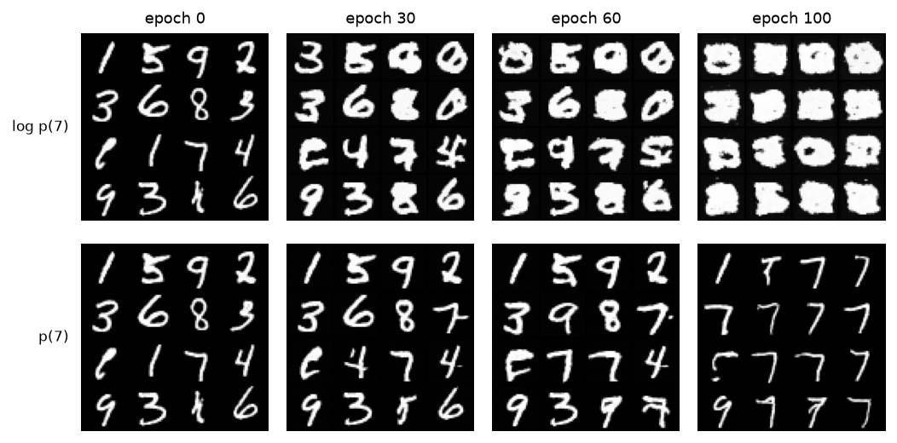
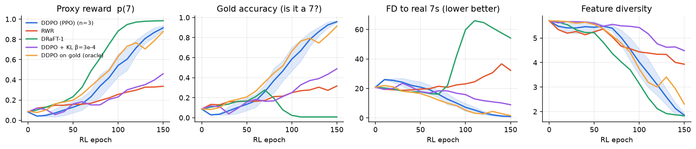
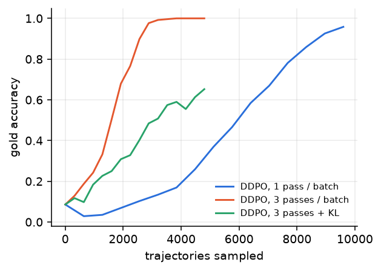
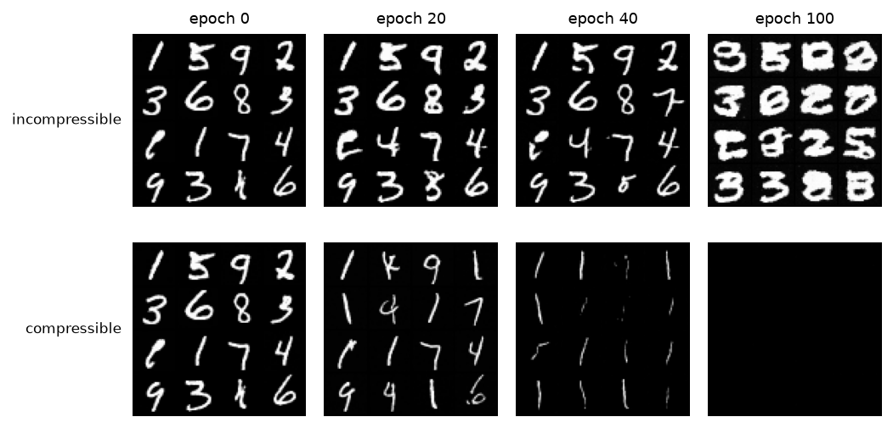

When the reward model lies
A controlled study of DDPO, reward-weighted regression, direct reward backprop and best-of-N, in a setting where reward hacking can be measured instead of guessed.
proxy score 0.91 · 3 seeds, ±1%
proxy score 0.99 · 3 seeds, ±0.2%
Both methods were trained on the same weak reward model, and both "solved" it. Only one of them made 7s. The rest of this note is about why, and what it implies for fine-tuning generative models against learned rewards.

Findings
- Policy-gradient RL is robust to a bad reward model; gradient-based fine-tuning is not. Every method that only reweights its own samples (DDPO, RWR, best-of-N) stays on the proxy = gold diagonal. DRaFT leaves it at proxy ≈ 0.5 and ends at 0.7% gold accuracy, about 6,500 nats from the base model.
- Reward shaping decides the outcome before the algorithm does. log p and p have the same maximiser, but normalised policy gradients follow the dominant direction of reward variance. For log p that direction is "more ink".
- Best-of-N is the strongest baseline per nat. Best-of-64 reaches 99% gold accuracy at 3.2 nats of exact KL. A KL penalty keeps diversity (4.5 vs 1.85) at a steep cost in reward.
- Sample reuse gives about 3× sample efficiency, and PPO's clip has nothing to do with it. Measured importance ratios never leave [0.99, 1.01], so the ε = 0.2 clip never fires.
- Controls matter. A random-reward run drifts 65 nats, and one low-noise denoising step can dominate both the gradient and the KL estimate.
Why RL for diffusion?
Diffusion models learn to imitate data. What we usually want is something else: images that match a prompt, that people rate highly, that compress well, or, in science, proteins that fold and molecules that bind. These targets are rewards, often non-differentiable, usually provided by a learned model, and never part of the pre-training loss.
Methods for closing that gap:
- DDPO treats denoising as an MDP and applies policy gradients.
- DPOK adds a KL penalty to the pretrained model.
- DRaFT / AlignProp back-propagate the reward through the sampler.
- Reward-weighted regression fine-tunes on high-reward samples.
- Best-of-N is the inference-time baseline.
The practical question is which of these improve the true objective and which just find the reward model's blind spots. You can't answer that with Stable Diffusion and an aesthetic predictor, because there is no ground truth to check against. So I built a setting with one.
A testbed where Goodhart's law is measurable
- Base model
- 1.5M-param UNet DDPM on MNIST, unconditional, 10k steps. About 9% of samples are 7s.
- Proxy reward
- MLP trained on 1,000 labels (89.9% test). r = p(7 | x). Stands in for a learned reward model.
- Gold evaluator
- CNN on all 60k labels with augmentation (99.2%). Never used for training.
- Feature net
- Independent CNN (99.0%) for Fréchet distance to real 7s and diversity.
- Black-box reward
- JPEG file size, which has no gradient.
- Task
- Turn an unconditional digit generator into a 7 generator using only the proxy.
Denoising as a decision process
A DDIM sampler with η = 1 is a chain of Gaussian transitions, which you can read as a policy:
The log-probability of each step is exact and cheap, even though the image likelihood is intractable. That is all a policy gradient needs:
The policy and the frozen reference share σ_t, so their per-step KL is closed-form. Summing it over the chain gives a path KL, which upper-bounds the KL between final images:
RWR instead does weighted denoising regression on its own samples. DRaFT back-propagates ∇ₓr through the last sampling step. All methods share the base model, a 20-step sampler, 64 trajectories per epoch, AdamW at 1e-5, and the same 256 fixed evaluation seeds.
Same proxy reward, opposite outcomes

| Method (150 epochs) | proxy p(7) | gold acc | FD → 7s ↓ | diversity | path-KL |
|---|---|---|---|---|---|
| Pretrained base | 0.081 | 0.086 | 20.85 | 5.71 | 0 |
| DDPO, 3 seeds | 0.914 ± .022 | 0.958 ± .010 | 0.96 | 1.85 | 76 ± 64 |
| DDPO, 3 passes / batch (75 ep) | 0.983 | 1.000 | 1.78 | 1.10 | 76 |
| DDPO + KL β = 3e-4 | 0.460 | 0.488 | 8.93 | 4.49 | 7 |
| RWR | 0.336 | 0.316 | 32.26 | 3.93 | 697 |
| DRaFT-1, 3 seeds | 0.988 ± .003 | 0.007 ± .002 | 49.7 | 1.81 | 6,500 |
| Oracle: DDPO on gold | 0.825 | 0.914 | 1.62 | 2.31 | 68 |
| Best-of-16 (no training) | 0.739 | 0.749 | – | – | 1.8 exact |
| Best-of-64 (no training) | 0.962 | 0.989 | – | – | 3.2 exact |
The clearest view puts the optimised quantity against the true one:


Why the difference
DDPO's update is a weighted average of the score function over the model's own samples. It can only shift probability toward images the model already makes, and on those in-distribution images the proxy is roughly right. DRaFT's update is ∇ₓr: it asks the reward model which pixel direction raises the score and moves there. For an MLP, that direction is an adversarial perturbation. DRaFT is an adversarial attack on the reward model, amortised into the generator's weights.
Reward shaping comes first
My first DDPO run used r = log p(7|x), the classifier's own log-likelihood. It produced blobs: gold accuracy went from 9% to 0%. Changing only the reward to p(7|x) produced 96% real 7s.
The cause is advantage normalisation. With 9% 7s per batch, most of the variance in log p comes from the 91% that are not 7s, and among those, more ink makes log p(7) slightly less negative. A batch-normalised policy gradient follows the dominant direction of reward variance, which is ink. Best-of-N never notices, because it only looks at the top sample. With the bounded p, non-7s all score about 0, so the gradient comes from the 7s.
A monotone transform of the reward leaves the optimum unchanged, but it changes the optimisation path, and with it which optimum you reach.

The price of staying close

Best-of-64 reaches 99% gold accuracy at 3.2 nats of exact KL. The RL runs reach the same accuracy at 20–165 nats of path-KL. Part of that gap is measurement: path-KL is an upper bound, and the random-reward control shows tens of nats can be pure optimiser noise. The conclusion still matches what Gao et al. found for language models. If inference compute is cheap, best-of-N is very hard to beat. RL earns its place by building that search into the weights, here making sampling 64× cheaper.
Sample reuse, and a clip that never clips

With one pass per batch, DDPO-IS and DDPO-SF were bit-for-bit identical. DDPO averages each step's log-prob over pixels (784 here, about 16k latents in Stable Diffusion), which shrinks the log-ratio by that factor. Measured: after one update |ρ − 1| has a mean of 2e-4 and a maximum of 6e-3. After six passes the maximum is still under 0.01.
So the ε = 0.2 clip never fires, even with reuse. The 3× gain comes from extra gradient steps on slightly stale data. This also explains why the official DDPO configuration uses ε = 1e-4.
Black-box rewards
DRaFT can't run on JPEG file size; DDPO doesn't need a gradient. Rewarding incompressibility (+30% file size) gives thick, rough strokes and shifts samples toward high-edge digits, replicating DDPO's original findings. Rewarding compressibility finds the degenerate optimum: digits thin into faint strokes, then fade to solid black. The reward is satisfied exactly and the output is useless.

Gotchas that took most of the time
- The last denoising step dominates. With a 20-step cosine schedule ending at t = 0, the final stochastic step has σ ≈ 0.006. Its score term is about 100× larger than early steps, so it dominates gradient variance and the KL estimate (602 nats vs 7.7). Ending the stochastic chain at t = 20 fixed both with identical sample quality.
- Run a null-reward control. DDPO with random advantages moved 65 nats in 100 epochs and drifted slightly brighter. Every KL number should be read against that floor.
- Keep x̂₀ clipping. Removing it for cleaner gradients wrecked 20-step sampling (FD 1.3 → 149).
- Learning rate controls reward hacking. At 3e-5 instead of 1e-5, DDPO on the proxy went straight to blobs. Faster optimisation reaches off-distribution regions before the on-policy protection helps.
What I'd carry to a real system
- Prefer on-policy, score-function methods when the reward model is learned. Use gradient-based fine-tuning only with robust or ensembled reward models and early stopping on a held-out evaluator.
- Always keep an evaluator the optimiser never sees: a second reward model, human raters, or for protein design an orthogonal structure predictor.
- Treat reward shaping as a first-class hyper-parameter. Bounded rewards and rank-based advantages focus the gradient on the tail you care about.
- Report KL against a null-reward control, and compare with best-of-N at matched KL.
Next:
- the same proxy-vs-gold protocol on Stable Diffusion with LoRA, using a weak and a strong aesthetic model
- Diffusion-DPO in the same harness
- reward-model ensembles as a defence against gradient hacking
- structure-generating diffusion models such as protein backbones, with an independent folding model as the gold evaluator